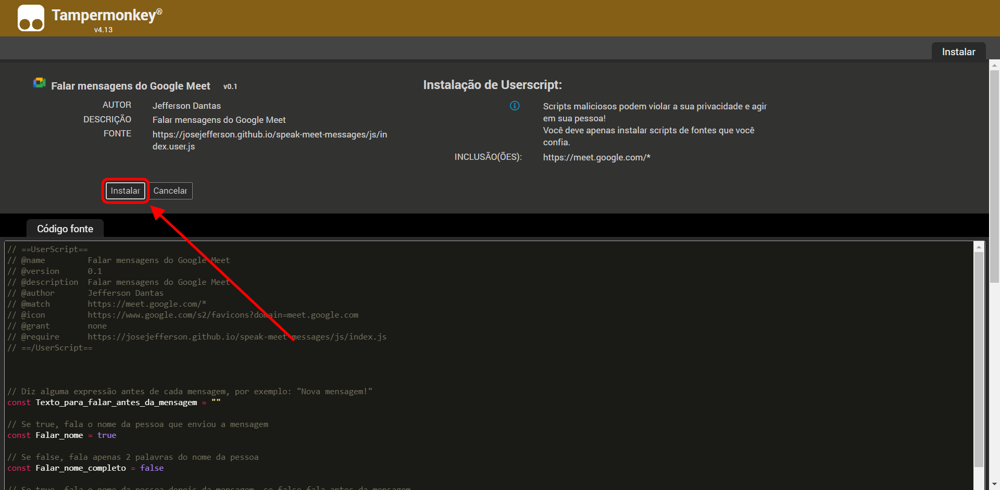
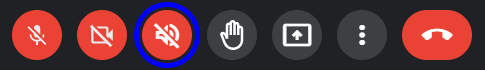
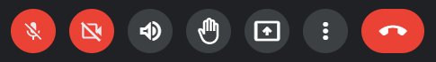

Acompanhe o chat do Google Meet enquanto apresenta a tela
Instalando essa extensão, você escuta as novas mensagens sem precisar mudar para a tela do Meet
Instalar extensão Atualização disponível (v v) Importante: Para instalar esta extensão, você precisa antes instalar o Tampermonkey Instalar TampermonkeyComo instalar?
Passo 1
Instalar o Tampermonkey
Clique aqui para instalar
Clique em "Usar no Chrome" depois em "Adicionar extensão" e aguarde a instalação
Passo 2
Instalar a extensão
Clique aqui para instalar
Ao aparecer a tela abaixo, clique em "Instalar"
Caso esta tela não apareça, significa que o Tampermonkey não está
instalado, então volte ao Passo 1.

Caso esteja com o Google Meet aberto, saia e entre novamente
Como usar?
Você só ouvirá as mensagens se o chat estiver fechado.
Ao abrir o Google Meet você verá um novo botão na barra inferior

Caso ele esteja vermelho, significa que está desativado, clique para ativar e ele
ficará assim:

Se o botão estiver escuro, tente atualizar a página. Se o problema persistir,
significa que o seu navegador não é compatível

Opções
Clicando com o botão direito no botão você acessa o menu de opções
O que há de novo?
Versão 0.6
- Trocado as caixas de seleção por switches nas opções
- Pequenos ajustes
Versão 0.5
- Posição do botão de ativar/desativar fala movida para direita do botão da câmera
- Novo menu de opções acessível clicando com o botão direito do mouse no botão de ativar/desativar fala
Versão 0.4
- Caso a 2ª parte do nome for muito pequena, lê 3 partes